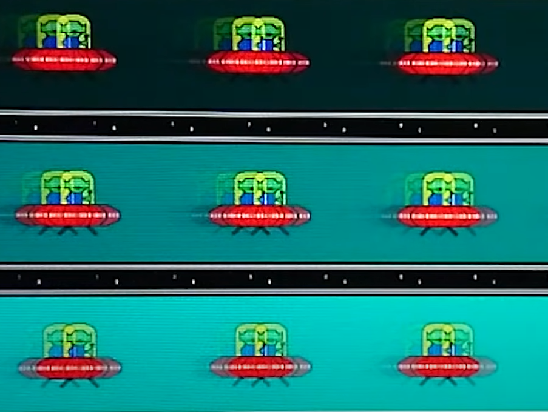
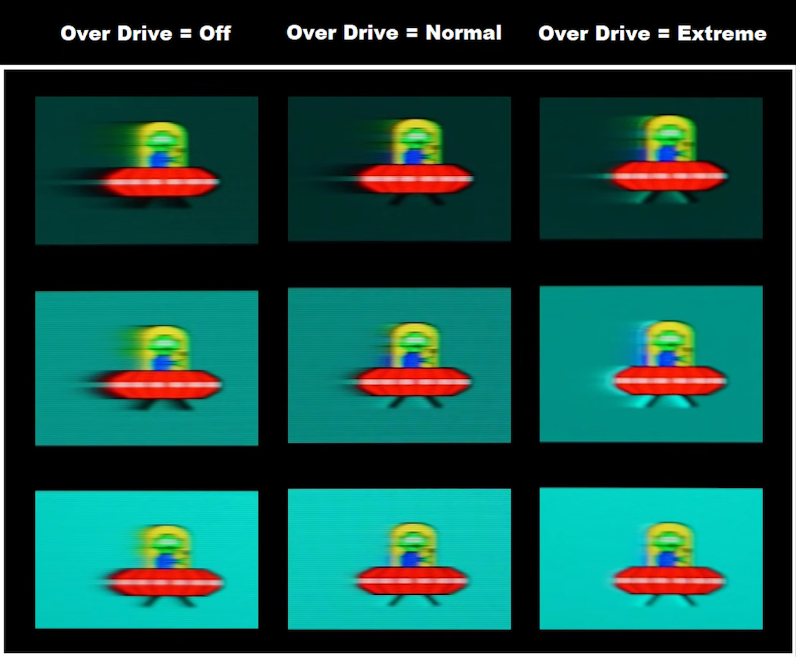
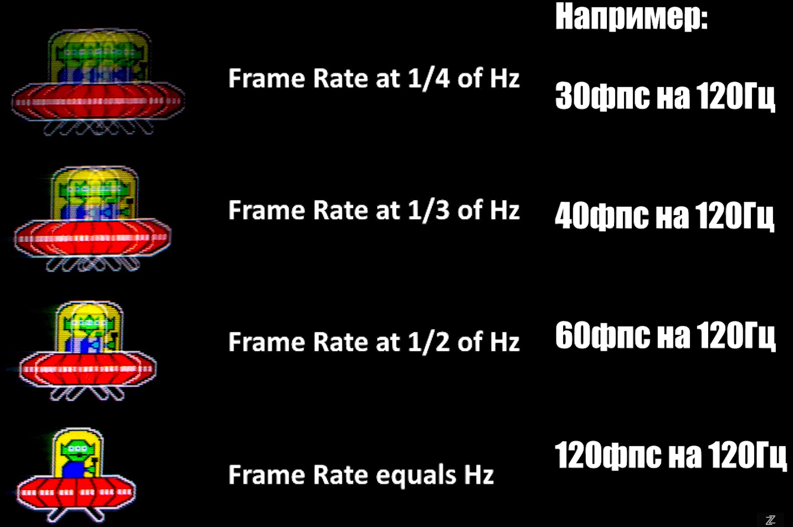

ТУТОРИАЛ НА МОНИТОР <3
Меню
При нажатии на любую из кнопок на мониторе открывается меню, содержащее в себе следующие элементы:
Эти пункты можно перенастроить, но я поставил именно эти, так как чаще всего нужны именно они.
Профили
Внутри находятся 11 различных профилей. Выбранный профиль сохраняется после выключения монитора, однако настройки некоторых из них все равно сбрасываются. Можешь все профили потыкать, но переход между ними довольно долгий, так что советую забить болт и использовать только настроенные мною профили:
- Стр.реал.вр
- Игрок1
- Игрок2
- Игрок3
Самый оптимальный профиль для игр - это Игрок1. В нем я настроил цветокор и включил стробинг. Игрок2 отличается от Игрок1 только наличием стробинга. В Игрок3 также выключен стробинг, но при этом отсутствует цветокор, картинка как с завода.
Режим Стр.реал.вр исходя из названия и уродливой картинки уменьшает цветовой диапазон, что скорее всего влияет на инпутлаг. Так что вероятнее всего с ним игра более отзывчивая, но хер его пойми. Я на этом режиме подкрутил цвета, чтобы картинка стала поадекватнее, плюс сделал её еще насыщеннее, и само собой включил стробинг, так что этот режим, наверное, самый ✨киберспортивный✨ из всех.
Стробинг (Blur Reduction)
Стробинг - это тот самый гхеймерский режим, который я постоянно включал, чтобы залетало. С ним изображение включается и выключается 1000 раз в секунду, благодаря чему пропадает гостинг, но все становится чуть темнее.
В Валоранте всегда включаю, так как на резких поворотах картинка не размывается и проще вычленить внезапно пикнувшего врага. Да и в целом так все смотрится более плавным и глаза меньше болят.
Однако в играх, где ФПС ниже герцовки, этот режим стоит отключать, иначе картинка начнет множиться.
Фильтр чёрного (Black eQualizer)
Это та самая штука, которую я выкручиваю на максимум, когда в Майнкрафте наступает ночь или захожу в пещеру. Она просто увеличивает яркость в темных участках, при этом не затрагивая светлые. Весьма актуально в недостаточно освещенной КС, но не нужно в Валоранте. При необходимости включай не стесняйся, штука полезная.
Настройки
Внутри куча всяких полезных и бесполезных приблуд, большинство из которых вообще не нужно трогать, так как я уже сделал как надо. Однако если руки все-таки тянутся поковыряться, отмечу самые нужные и интересные твики.
Изображение
LowBlueLight
Тупо поднимает количество желтого на экране, чтобы картинка была помягче. Поставил на середину, при этом скомпенсировав все в цветокоре, но если захочется убрать/прибавить - милости прошу.
AMA
Устранение гостинга путем повышения напряжения на кристаллы. Везде включил и поставил на слабый режим, потому что на сильном режиме появляется овершут.
Можешь потыкать туда-сюда, но смысла в этом мало, и так уже стоит идеальный вариант.
СброситьЦвет
Очевидно просто сбрасывает все настройки со всех режимов. Однако влияет только на настройки цвета и резкости, различные твики, такие как стробинг и AMA он не трогает.
Сохр.настр.
При изменении каких-либо настроек они автоматически сохраняются и не сбрасываются, пока не воспользуешься пунктом СброситьЦвет. За одним исключением: режимы Игрок1-Игрок3 сохраняют настройки только вручную, через этот пункт настроек. Что, кстати, очень удобно: можешь повысить фильтр чёрного играя в Майнкрафте, а когда на следующий день включишь компьютер, этот эффект сам выключится, так как вручную ты его не сохранял.
Система
Кнопка"Пользов."1-3
Просто позволяет настроить пункты в менюшке, если тебе, например, не по душе стробинг, но ты хочешь вручную управлять насыщенностью. Там много пунктов, может найдешь что полезное для себя.
Примеры (из интернетов)
Гостинг
Остаточное изображение, свойственной любому ЖК монитору.
AMA
Сравнение выключенной компенсации, нормальной и мощной. В последнем случае виден овершут - слишком яркий шлейф
Стробинг
Наглядная работа стобинга, полностью удаляющего шлейф, однако дублирующего картинку при низком ФПС.
